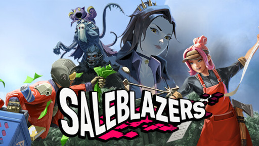
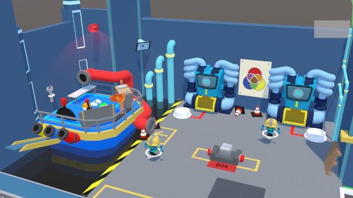
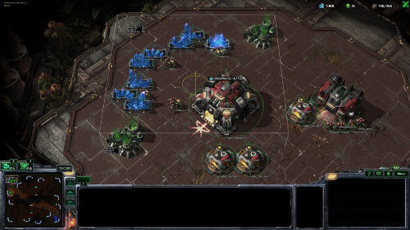
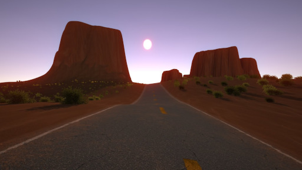
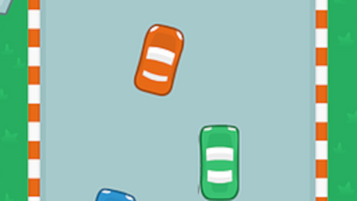
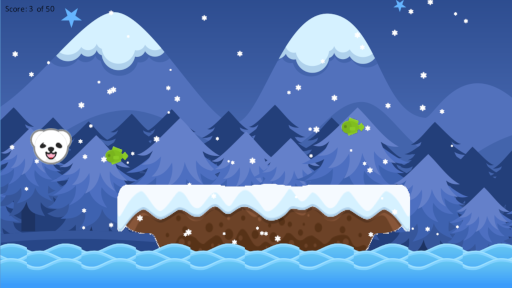

Salvador Galindo
GAMES

Multiplayer open-world shopkeeping game made in Unity. Lead Engineer for Airstrafe Interactive's debut title.

Award-winning co-op game that combines both VR and traditional controls to deliver a fun and hectic experience. I was mostly involved in the implementation of the player's movement and interactions on the traditional controller side, as well as its particle effects. Developed in Unity with a group of 12 members.

AI for Starcraft II that successfully beats the medium difficulty CPU. In a group of five collaborators, we created a bot that follows a behavior tree to determine its actions at runtime. Developed with Blizzard's Starcraft II API and Professor Dave Churchill's CommandCenter API in C++.

Procedurally generated landscape based on the beautiful rock formations of Monument Valley. I created all the textures (rock, sand, and road) in Substance Designer, and generated the entire landscape in Unity.
Android app that facilitates note-taking and research with the help of Google Cloud Vision to convert images to editable text and citable sources. I developed a system that automatically generates a bibliographic citation with only the book's title. Developed in Java with a five-member team.

Top-down 2D endless runner where you play as an outlaw on the run from the police by dodging and weaving around traffic. This game was also created using the Phaser 2 framework for Javascript by myself.

2D side-scrolling platformer that explores environmental issues. Consists of three mechanically distinct levels, which are assisted by procedural generation. I was responsible for all the programming, which included physics, accurate collision detection, player movement, random generation at runtime, and state management. Developed in Game Maker Studio with another person.